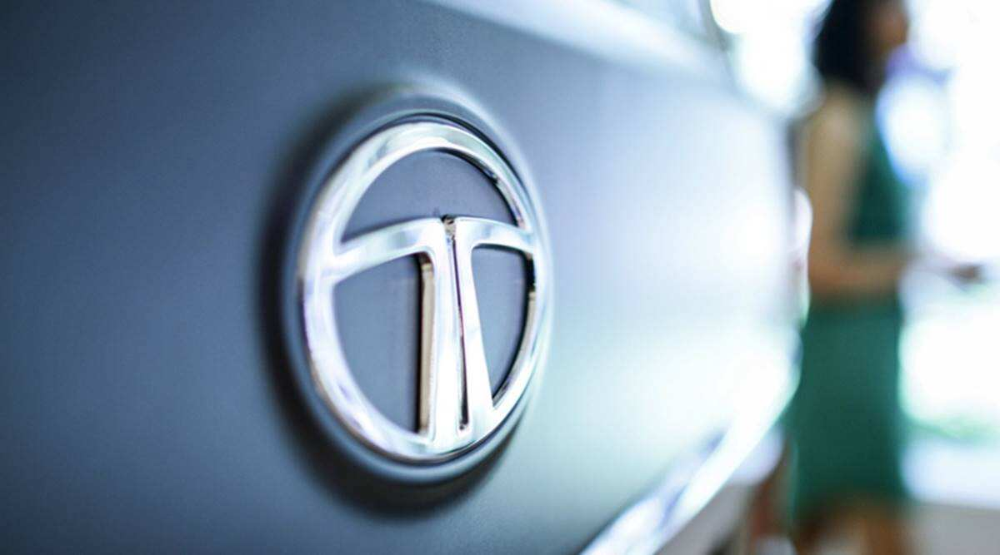

TATA
A boon for India

Tata Group is an Indian multinational conglomerate manufacturer of automobiles, airplanes and other products, headquartered in Mumbai, Maharashtra, India.
Here's a Timeline of the TATAs
- 1868 - Jamsetji Nusserwanji Tata starts a trading company with a capital of INR 21,000
- 1874 - Jamasetji Tata establishes a textile mill in Nagpur
- 1886 - Empress Mills pioneers employee welfare initiatives, long before they are enacted by law.
- 1892 - Jamsetji establishes JN Tata Endowment Fund to help Indians study abroad
- 1903 - Taj Mahal Hotel opens for business on December 16
- 1904 - Jamsetji passes away, his son, sir Dorabji becomes Chairman
- 1907 - Sir Dorabji establishes Tata Iron and Steel Company
- 1909 - Indian Institute of Science is established through the vision of JN tata, 5 years after his death
- 1910 - Established Western India's first hydro plant
- 1971 - Debut of Tata Oil and Mills Co
- 1936 - The Tata Institute of Social Sciences is established
- 1945 - Established Tata Engineering and Locomotive Company
- 1952 - India's first cosmetic brand Lakme launched
- 1954 - Voltas ac brand incorporated
- 1968 - India's first software services company, Tata Consultancy Services ushers in new era
- 1983 - Tata salt
- 1994 - Launch of Tanishq, a jewellery brand
- 1998 - Tata Safari, India's first SUV launched
- 2006 - Tata Sky launched
- 2008 - Tata Nano, affordable to millions launched
- 2017 - N. Chandrasekaran appointed as Chairman of Tata Sons
"I don't believe in taking right decisions. I take decisions and then make them right." - Sir Ratan Naval Tata
Want to know more? visit Wikipedia